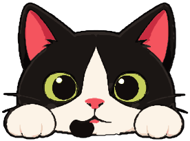
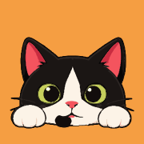

YumCSS brand assets — review
Primary mark · logo-mark.svg

App icon · app-icon.svg
Favicon · actual size
Favicon · enlarged for inspection (rendered PNG pixels)
Raster exports

Experimental — not canonical · mark-monochrome.svg (currentColor)
Mark + text example (not a final wordmark)
YumCSS
YumCSS
System font placeholder only — the wordmark is not designed yet.